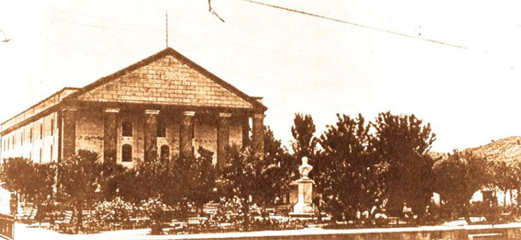
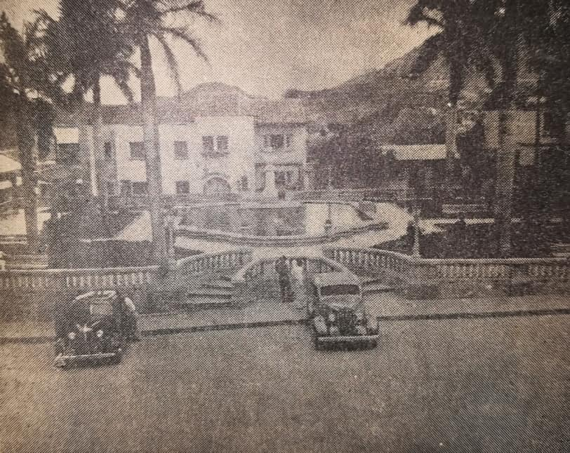
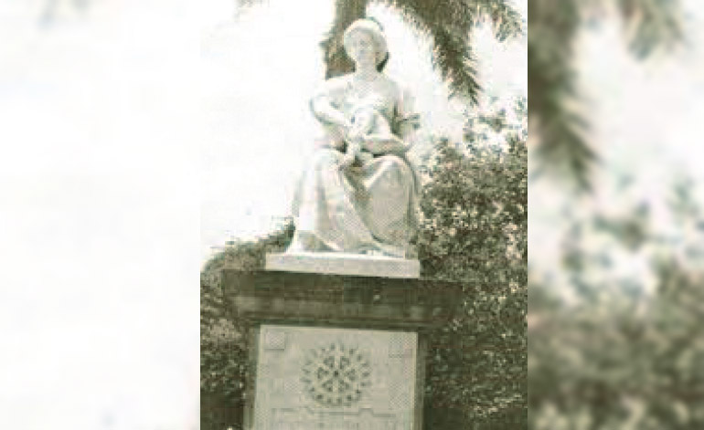
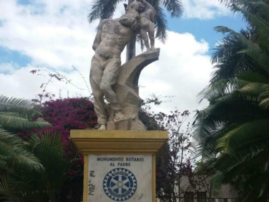
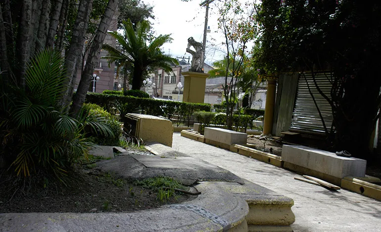
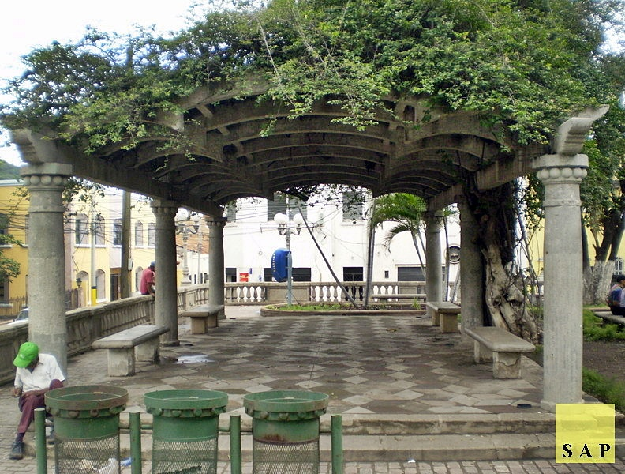

Linea de Tiempo, Parque Herrera
1915
Los inicios del parque datan de 1915, tras la construcción del Teatro Nacional Manuel Bonilla, frente a esta edificación se comenzó a construir un jardín que pertenecía a la Plaza de El Calvario en el Barrio Abajo, en el cual se colocó el busto de mármol del primer jefe de estado de Honduras Dionisio de Herrera, llamándose desde entonces “Parque Herrera”.
1942
En 1942 durante la administración de Carías el parque fue reconstruido y finalizado como un parque; dicha intervención fue realizada por el arquitecto mexicano Agusto Morales Sánchez. El parque fue “diseñado” con escaleras y balaustradas como elementos característicos. El nuevo diseño incluía dos glorietas al extremo occidental en cuyas bancas se resguardaban del intenso sol los visitantes.
1955
En 1955 se colocó en el parque una estatua dedicada a la madre. Años posteriores fue removida y se encuentra en una plaza del Boulevard Económica Europea en las cercanías del aeropuerto Toncontín. La escultura fue remplazada por otra dedicada al padre hondureño y la hasta la actualidad se encuentra dentro del parque.
2001
El Club Rotario Internacional colocó el monumento al padre el 28 de junio de 2001, para honrar la figura del padre se le hace homenaje con este monumento. La figura de mármol se encuentra a un costado del Parque Herrera, frente al Teatro Nacional Manuel.
2003
En el año 2003, un proyecto auspiciado por el BID apuntó a rehabilitar el sector de El Calvario, área donde se ubica el jardín. Para ese entonces era un vecindario virtualmente abandonado y peligroso. El parque también fue rescatado recuperando su encanto y significado histórico.
2022
En la actualidad el parque aun mantiene los elementos arquitectónicos que lo caracterizan, como ser su pérgola y balaustrada. Sin embargo luce descuidado y algunos elementos necesitan una restauración para su conservación y preservación.
